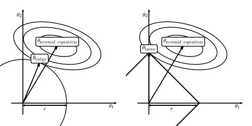

Ridge and Lasso: Geometric Interpretation¶
Figure 8.3
A geometric interpretation of regularization. The right panel shows L1 regularization (LASSO regression) and the left panel L2 regularization (ridge regularization). The ellipses indicate the posterior distribution for no prior or regularization. The solid lines show the constraints due to regularization (limiting theta^2 for ridge regression and |theta| for LASSO regression). The corners of the L1 regularization create more opportunities for the solution to have zeros for some of the weights.
{kind=link}
# Author: Jake VanderPlas
# License: BSD
# The figure produced by this code is published in the textbook
# "Statistics, Data Mining, and Machine Learning in Astronomy" (2013)
# For more information, see http://astroML.github.com
# To report a bug or issue, use the following forum:
# https://groups.google.com/forum/#!forum/astroml-general
import numpy as np
from matplotlib import pyplot as plt
from matplotlib.patches import Ellipse, Circle, RegularPolygon
#----------------------------------------------------------------------
# This function adjusts matplotlib settings for a uniform feel in the textbook.
# Note that with usetex=True, fonts are rendered with LaTeX. This may
# result in an error if LaTeX is not installed on your system. In that case,
# you can set usetex to False.
from astroML.plotting import setup_text_plots
#------------------------------------------------------------
# Set up figure
fig = plt.figure(figsize=(5, 2.5), facecolor='w')
#------------------------------------------------------------
# plot ridge diagram
ax = fig.add_axes([0, 0, 0.5, 1], frameon=False, xticks=[], yticks=[])
# plot the axes
ax.arrow(-1, 0, 9, 0, head_width=0.1, fc='k')
ax.arrow(0, -1, 0, 9, head_width=0.1, fc='k')
# plot the ellipses and circles
for i in range(3):
ax.add_patch(Ellipse((3, 5),
3.5 * np.sqrt(2 * i + 1), 1.7 * np.sqrt(2 * i + 1),
-15, fc='none'))
ax.add_patch(Circle((0, 0), 3.815, fc='none'))
# plot arrows
ax.arrow(0, 0, 1.46, 3.52, head_width=0.2, fc='k',
length_includes_head=True)
ax.arrow(0, 0, 3, 5, head_width=0.2, fc='k',
length_includes_head=True)
ax.arrow(0, -0.2, 3.81, 0, head_width=0.1, fc='k',
length_includes_head=True)
ax.arrow(3.81, -0.2, -3.81, 0, head_width=0.1, fc='k',
length_includes_head=True)
# annotate with text
ax.text(7.5, -0.1, r'$\theta_1$', va='top')
ax.text(-0.1, 7.5, r'$\theta_2$', ha='right')
ax.text(3, 5 + 0.2, r'$\rm \theta_{normal\ equation}$',
ha='center', bbox=dict(boxstyle='round', ec='k', fc='w'))
ax.text(1.46, 3.52 + 0.2, r'$\rm \theta_{ridge}$', ha='center',
bbox=dict(boxstyle='round', ec='k', fc='w'))
ax.text(1.9, -0.3, r'$r$', ha='center', va='top')
ax.set_xlim(-2, 9)
ax.set_ylim(-2, 9)
#------------------------------------------------------------
# plot lasso diagram
ax = fig.add_axes([0.5, 0, 0.5, 1], frameon=False, xticks=[], yticks=[])
# plot axes
ax.arrow(-1, 0, 9, 0, head_width=0.1, fc='k')
ax.arrow(0, -1, 0, 9, head_width=0.1, fc='k')
# plot ellipses and circles
for i in range(3):
ax.add_patch(Ellipse((3, 5),
3.5 * np.sqrt(2 * i + 1), 1.7 * np.sqrt(2 * i + 1),
-15, fc='none'))
# this is producing some weird results on save
#ax.add_patch(RegularPolygon((0, 0), 4, 4.4, np.pi, fc='none'))
ax.plot([-4.4, 0, 4.4, 0, -4.4], [0, 4.4, 0, -4.4, 0], '-k')
# plot arrows
ax.arrow(0, 0, 0, 4.4, head_width=0.2, fc='k', length_includes_head=True)
ax.arrow(0, 0, 3, 5, head_width=0.2, fc='k', length_includes_head=True)
ax.arrow(0, -0.2, 4.2, 0, head_width=0.1, fc='k', length_includes_head=True)
ax.arrow(4.2, -0.2, -4.2, 0, head_width=0.1, fc='k', length_includes_head=True)
# annotate plot
ax.text(7.5, -0.1, r'$\theta_1$', va='top')
ax.text(-0.1, 7.5, r'$\theta_2$', ha='right')
ax.text(3, 5 + 0.2, r'$\rm \theta_{normal\ equation}$',
ha='center', bbox=dict(boxstyle='round', ec='k', fc='w'))
ax.text(0, 4.4 + 0.2, r'$\rm \theta_{lasso}$', ha='center',
bbox=dict(boxstyle='round', ec='k', fc='w'))
ax.text(2, -0.3, r'$r$', ha='center', va='top')
ax.set_xlim(-2, 9)
ax.set_ylim(-2, 9)
plt.show()